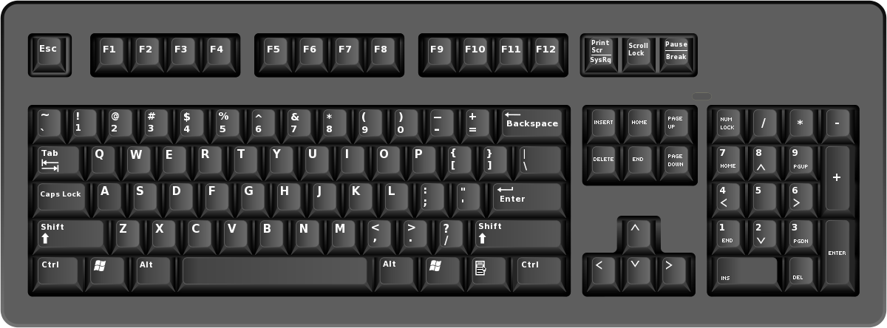
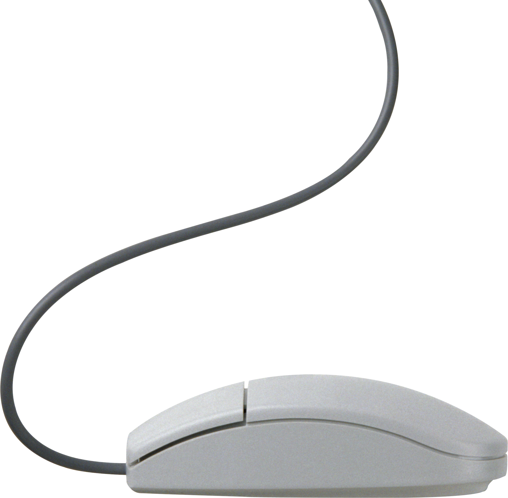
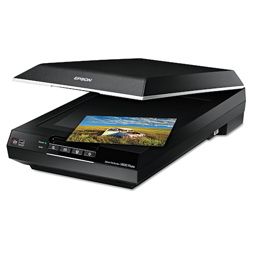
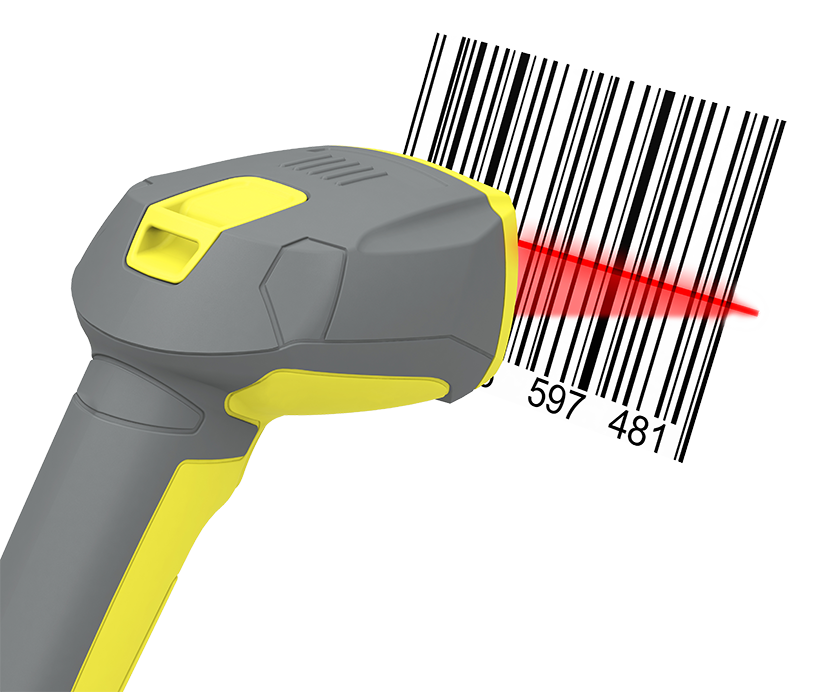
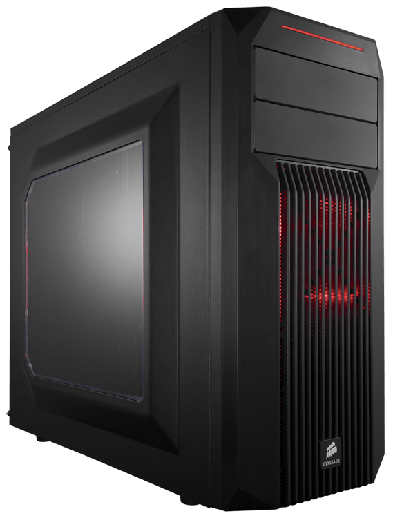
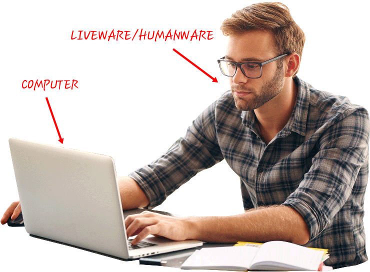

whatsapp
whatsapp gmail
gmail
| NAME | Abdulmalik & Arafat |
|---|---|
| COURSE | |
| TOPIC | computer system |
| DATE | 22nd of march 2023 |
COMPUTER SYSTEM
COMPUTER SYSTEM
Definition: Is a collection of entities(hardware,software and liveware) that are designed to receive, process, manage and present information in a meaningful format.
COMPONENTS OF COMPUTER SYSTEM
- Computer hardware - Are physical parts/ tangible parts of a computer. eg Input devices, output devices, central processing unit and storage devices
- Computer software - is a set of instructions, data or programs used to operate computers and execute specific tasks. It is the opposite of hardware, which describes the physical aspects of a computer. They are classified into two classes namely - system software and application software
- Liveware - is the computer user. Also kwon as orgwareor the humanware. The user commands the computer system to execute on instructions.
COMPUTER HARDWARE
Hardware refers to the physical, tangible computer equipment and devices, which provide support for major functions such as input, processing (internal storage, computation and control), output, secondary storage (for data and programs), and communication.

HARDWARE CATEGORIES (Functional Parts)
A computer system is a set of integrated devices that input, output, process, and store data and information. Computer systems are currently built around at least one digital processing device. There are five main hardware components in a computer system: Input, Processing, Storage, Output and Communication devices.
- .INPUT DEVICES
- OUTPUT DEVICES
Are devices used for entering data or instructions to the central processing unit. Are classifie according to the method they use to enter data.
A. KEYING DEVICES
Are devices used to enter data into the computer using a set of Keys eg Keyboard, key-to- storage and keypad.
i) THE KEYBOARD
Keyboard (similar to a typewriter) is the main input device of a computer . It contains three types of keys-- alphanumeric keys, special keys and function keys. Alphanumeric keys are used to type all alphabets, numbers and special symbols like $, %, @, A etc. Special keys such as <Shift>, <Ctrl>, <Alt>, <Home>, <Scroll Lock> etc. are used for special functions. Function keys such as <Fl>, <F2>, <F3> etc. are used to give special commands depending upon the software used e.g.F5 reloads a page of an internet browser. The function of each and every key can be well understood only after working on a PC. When any key is pressed, an electronic signal is produced. This signal is detected by a keyboard encoder that sends a binary code corresponding to the key pressed to the CPU. There are many types of keyboards but 101 keys keyboard is the most popular one.

B. POINTING DEVICES
Are devices that enter data and instructions into the computer using a pointer that appears on the screen. The items to be entered are selected by either pointing to or clicking on them.e.g mice, joystick, touch sensitive screen, trackballs
i) THE MOUSE
A mouse is a small device used to point to and select items on your computer screen. Although mice come in many shapes, the typical mouse does look a bit like an actual mouse. It's small, oblong, and connected to the system unit by a long wire that resembles a tail and the connector which can either be PS/2 or USB. Some newer mice are wireless.
A mouse usually has two buttons: a primary button (usually the left button) and a secondary button. Many mice also have a wheel between the two buttons, which allows you to scroll smoothly through screens of information.
When you move the mouse with your hand, a pointer on your screen moves in the same direction. (The pointer's appearance might change depending on where it's positioned on your screen.) When you want to select an item, you point to the item and then click (press and release) the primary button. Pointing and clicking with your mouse is the main way to interact with your computer. There are several types of mice: Mechanical mouse, optical mouse, optical-mechanical mouse and laser mouse.
Basic parts
A mouse typically has two buttons: a primary button (usually the left button) and a secondary button (usually the right button). The primary button is the one you will use most often. Most mice also include a scroll wheel between the buttons to help you scroll through documents and WebPages more easily. On some mice, the scroll wheel can be pressed to act as a third button. Advanced mice might have additional buttons that can perform other functions.

C) SCANNING DEVICES
Are devices that capture an object or a document directly from the source. They are classifie according to the technology used to capture data e.g. Scanners and Document readers.
i) Scanners
Used to capture a source document and converts it into an electronic form.
Example are - FlatBed and HandHeld scanners.

ii) Document readers
Are documents that reads data directly from source document and convey them as input in the form of electronic signal. e
Types of Document Readers
i) Optical Mar Reader (OMR)
ii) Barcode readers

iii) Optical Character Readers
b) Magnetic Readers
Reads data using magnetic ink.t uses principle of magnetism to sense data which have been written using magnetised ink.
An output device is essentially a piece of instrument or computer hardware that retrieves data from a computer system and further translates the received data into a form understandable to humans. The most common human-understandable forms typically include text, visual, audio, or a hard copy (printed on a paper). In simple words, an output device is a type of peripheral device that helps us to get data processed from a computer, usually in the form of audio, visual, and xerox.
Examples of output devices include
- Monitor
- printer
- speaker
- projector
THE CENTRAL PROCESSING UNIT ( C P U)
Is the brain or the heart of a computer. Is also known as processor and consist of three units namely -
i) Control Unit ( C U)
ii) Arithmetic logic Unit ( A L U)
iii) Main Memory unit ( M M U)
The system unit is the core of a computer system. Usually it's a rectangular box placed on or underneath your desk. Inside this box are many electronic components that process data. The most important of these components is the central processing unit (CPU), or microprocessor, which acts as the "brain" of your computer. Another component is random access memory (RAM), which temporarily stores information that the CPU uses while the computer is on. The information stored in RAM is erased when the computer is turned off.
Almost every other part of your computer connects to the system unit using cables. The cables plug into specific ports (openings), typically on the back of the system unit. Hardware that is not part of the system unit is sometimes called a peripheral device. Peripheral devices can be external such as a mouse, keyboard, printer, monitor, external Zip drive or scanner or internal, such as a CD-ROM drive, CD-R drive or internal modem. Internal peripheral devices are often referred to as integrated peripherals. There are two types according to shape: tower and desktop.

Tower System Unit Desktop System Unit
A motherboard (mainboard, system board, planar board or logic board) is the main printed circuit board found in computers and other expandable systems. It holds many of the crucial electronic components of the system, such as the central processing unit (CPU) and memory, and provides connectors for other peripherals.
Motherboard
TYPES OF PROCESSORS
I) Comples Instruction Set Computers (CISC)
ii) Reduced Instruction Set Computers (RISC)
Functions of the central processing unit
- Process data
- Control sequence of operaions within the computers
- It gives command to all parts of a computer
- It control the use of the main memory in storing of data and instructions
- it provides temporary storage (RAM) and permanent storage(ROM) of data
THE CONTROL UNIT
Is the center of operations for the computer system, it directs the activities of the computer system.
-
Functions of Control Unit
- It coordinates the flow of data out of, into, and between the various subunits of a processor.
- It understands commands and instructions.
- It regulates the flow of data within the processor.
- It accepts external commands or instructions, which it turns into a series of control signals.
COMPUTER SOFTWARE
Computer software refers to programming code that is executed on the computer hardware that facilitates the completion of tasks by a computer. it is also the set of instructions, data or programs used to operate computers and execute specific tasks. It is the opposite of hardware, which describes the physical aspects of a computer Software can be physically stored on the hard drive or at another location such as a USB drive, or it can be cloud-based and hosted over the internet. Computer software examples include operating systems, which allow for easy use of a computer's processing power, as well as applications like Notepad and Firefox.

The two main categories of computer software are:
- System software
- Applicationsoftware
SYSTEM SOFTWARE
These software programs are designed to run a computer's application programs and hardware. System software coordinates the activities and functions of the hardware and software. In addition, it controls the operations of the computer hardware and provides an environment or platform for all the other types of software to work
System software is used to manage the computer itself. It runs in the background, maintaining the computer's basic functions so users can run higher- level application software to perform certain tasks. Essentially, system software provides a platform for application software to be run on top of.
Examples of system software include:
- operating systems (OS) like macOS, Linux, Android and Microsoft Windows
- Utility Software
- Firmware
- Device Drivers
- computational science software
- game engines
- search engines
- industrial automation
- software as a service applications.
APPLICATION SOFTWARE
Application software is another type of computer software, one that is less technical than system software. Users are generally much more familiar with application software because it includes the programs that allow users to perform tasks
Application software is also a computer software package that performs a specific function directly for an end user or, in some cases, for another application.
some of the types of the application software include:
- Web browsers
- Word processors
- Multimedia software
- Spreadsheet software
- Graphics software
- Database programs
- Web browsers
- Deployment tools
- Image editors
- Communication platforms
LIVEWARE
Liveware is a term to describe the human system, opposed to hardware or software in a computer. Or liveware is a working personnel, especially computer personnel, as distinct from the inanimate or abstract things they work with. Examples of liveware include professional computer engineers, hardware engineers, and network or database administrators. It also includes any other person working on the computer. The various types of software include application software and operating software. Other words meaning the same or similar to liveware include wetware, meatware and jellyware.
-
Functions of liveware includes:
- structural support
- environmental control
- operate computer system, etc.
Computer hardwares are needed to be replaced when it gets failed and does not work properly. People need to increase their knowledge and skills with changing technologies to work efficiently with new technologies.
